تیروئید
تیروئید
خطرات بیماری تیروئید؛ آیا مشکلات تیروئید میتواند باعث مرگ شود؟
نگاهی به اهمیت اختلالات تیروئید و زمان مراجعه برای بررسی تخصصی.
ادامه مطلبدانش بیمار
مطالب آموزشی درباره بیماریها، علائم و مراقبتهای مرتبط با جراحی غدد درونریز؛ به زبان ساده و قابلاعتماد.
تیروئید
نگاهی به اهمیت اختلالات تیروئید و زمان مراجعه برای بررسی تخصصی.
ادامه مطلب تیروئید
تیروئید
علت، علائم و راهکارهای درمانی مرتبط با اختلالات تیروئید و ریزش مو.
ادامه مطلب تیروئید
تیروئید
بررسی شرایط پس از برداشتن تیروئید و نکات مراقبتی مهم برای بیماران.
ادامه مطلب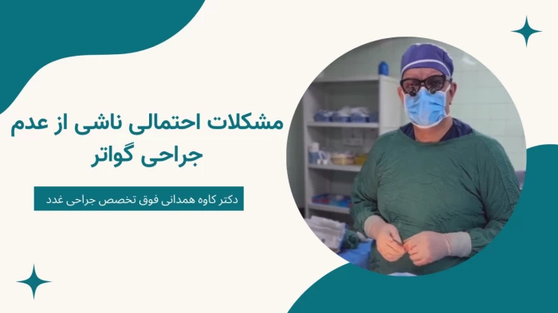
تیروئیدآشنایی با برجستگیهای تیروئید، علائم قابلمشاهده و زمان نیاز به بررسی تخصصی.
ادامه مطلب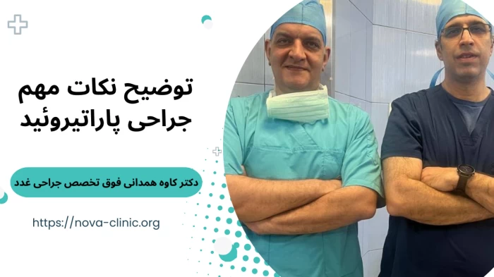
پاراتیروئیدوقتی غده پاراتیروئید بیش از حد PTH تولید کند و تعادل کلسیم بدن به هم بریزد.
ادامه مطلب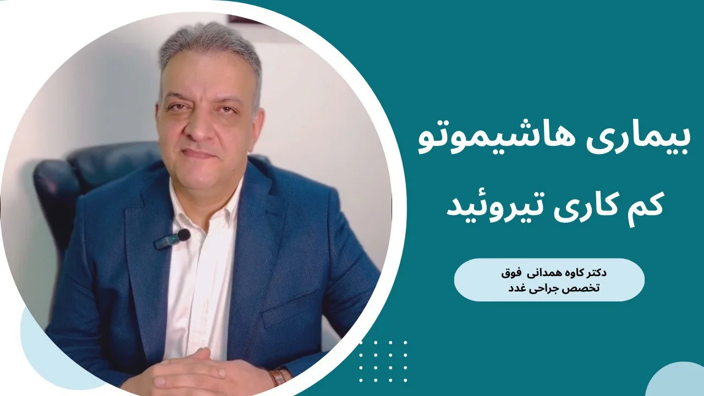
تیروئیدتپش قلب، کاهش وزن بیدلیل، لرزش دستها و اضطراب؛ نشانههایی که نباید نادیده گرفته شوند.
ادامه مطلب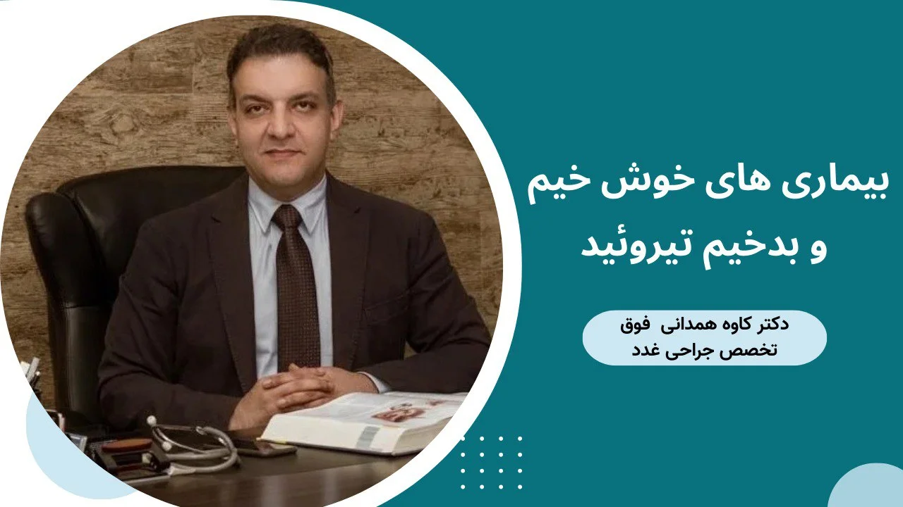
تیروئیدگاهی مجموعهای از تغییرات بهظاهر نامرتبط، سرنخ اصلی کمکاری تیروئید هستند.
ادامه مطلب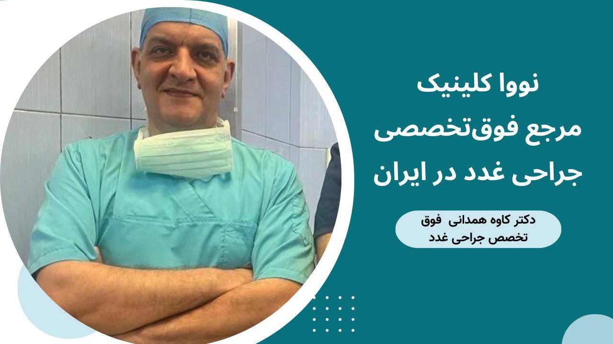
پاراتیروئیداگر بهطور مکرر سنگ کلیه دارید، بررسی وضعیت پاراتیروئید میتواند ضروری باشد.
ادامه مطلب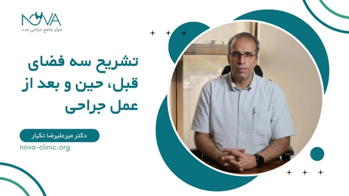
پاراتیروئیدافزایش هورمون پاراتیروئید چگونه باعث از دست رفتن کلسیم استخوانها میشود.
ادامه مطلب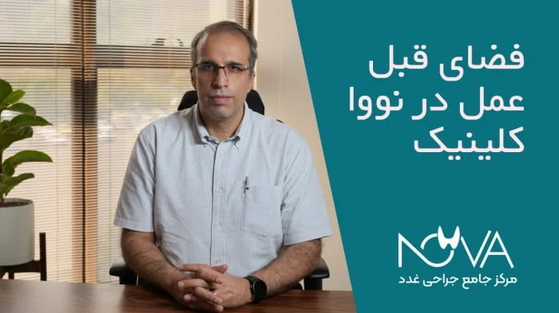
تیروئیدچه زمانی جراحی تیروئید در دوران بارداری مطرح میشود و چه نکاتی اهمیت دارد.
ادامه مطلب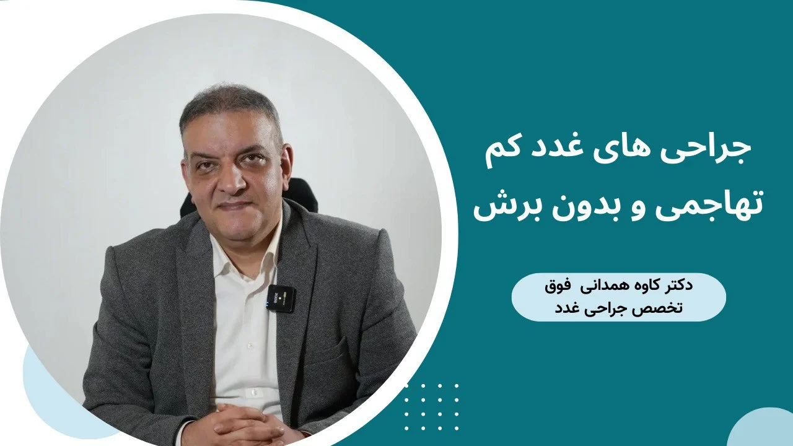
تیروئیداگر توده خوشخیم است، آیا جراحی لازم است؟ معیارهای تصمیمگیری را بدانید.
ادامه مطلب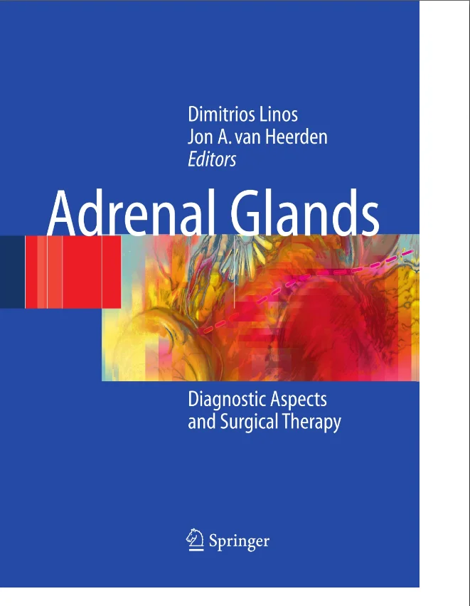
آدرنالخستگی شدید، تغییرات وزن و خلقوخو؛ نشانههایی که نیاز به بررسی آدرنال دارند.
ادامه مطلب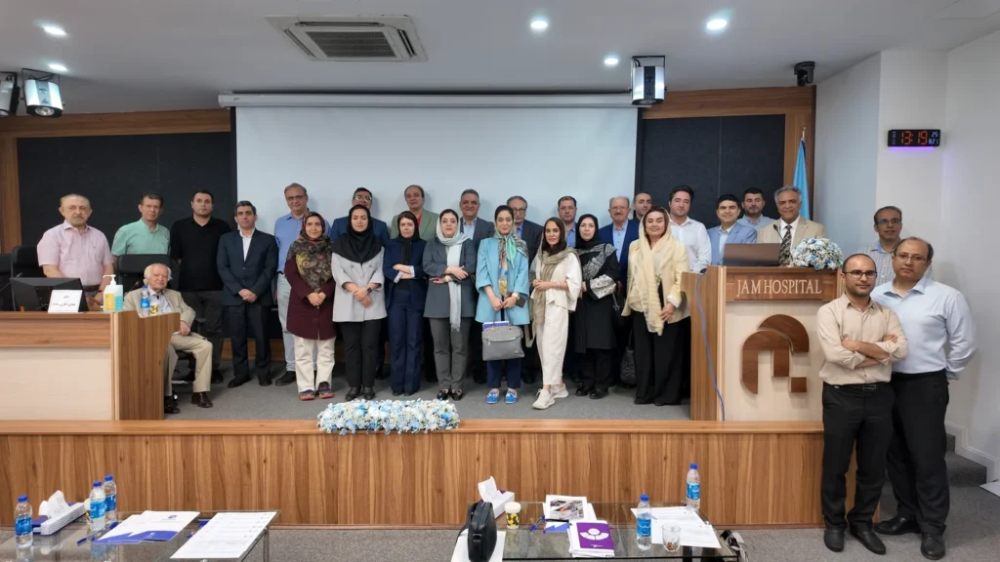
آدرنالآشنایی با کیستهای غده فوق کلیه و معیارهای نیاز به پیگیری یا مداخله.
ادامه مطلب آدرنال
آدرنال
تشخیص توده آدرنال بهمعنای خطر قطعی نیست؛ ارزیابی تخصصی مسیر را روشن میکند.
ادامه مطلب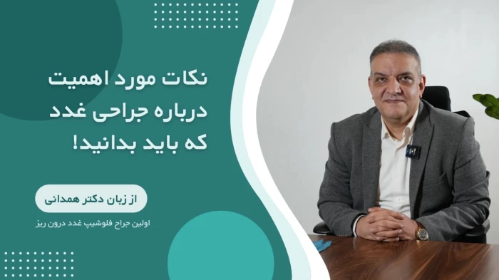
تیروئیدوقتی دارو یا ید رادیواکتیو کافی نباشد، جراحی میتواند گزینه درمانی باشد.
ادامه مطلب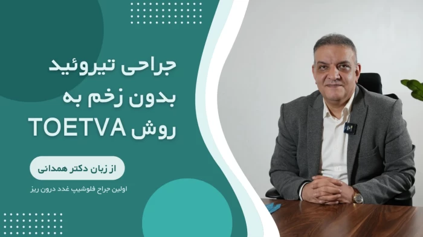
تیروئیدجراحی کیست همیشه بهمعنای برداشتن کامل غده نیست؛ نوع و علائم تعیینکننده است.
ادامه مطلبکمکاری بهتنهایی معمولاً دلیل جراحی نیست؛ مگر با گواتر بزرگ یا ندول مشکوک همراه باشد.
ادامه مطلبگزگز اطراف دهان و انگشتان، گرفتگی عضلات و نکاتی برای مراقبت پس از عمل.
ادامه مطلبهاشیموتو معمولاً با دارو کنترل میشود؛ جراحی در چه شرایطی مطرح میشود؟
ادامه مطلب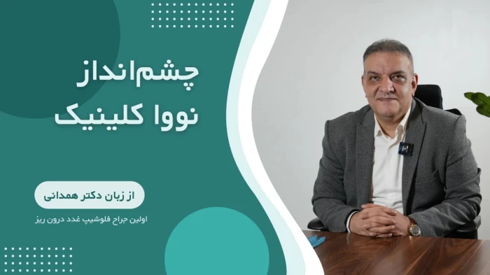
تیروئیدعوامل مؤثر بر هزینه عمل؛ از نوع جراحی و بیمارستان تا مراقبتهای قبل و بعد.
ادامه مطلبندول مشکوک، گواتر بزرگ و فشار بر نای؛ موقعیتهایی که جراحی مطرح میشود.
ادامه مطلبجراحی تیروئید معمولاً قابلکنترل است؛ میزان سختی به شرایط هر بیمار بستگی دارد.
ادامه مطلبراهنمای کاهش خطر افت کلسیم و آسیب عصبی پس از پاراتیروئیدکتومی.
ادامه مطلبعوامل مؤثر بر هزینه عمل پاراتیروئید و تفاوت شرایط درمانی هر بیمار.
ادامه مطلبمطلبی در این دسته یافت نشد.
نوبت مشاوره